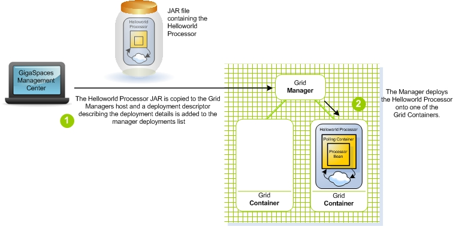
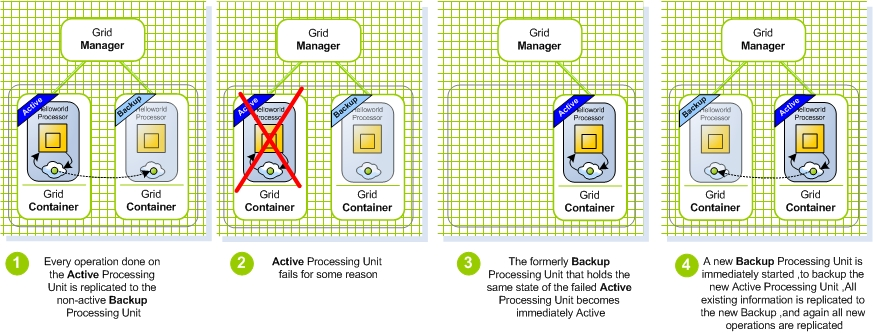

Tutorial summary: In this tutorial you learn how to deploy the Hello World application onto the GigaSpaces Service Grid to achieve fail-over, scaling and self-healing capabilities for your application. Approx 10 min
Overview
 Example Folder - <GigaSpaces Root>\examples\helloworld
Example Folder - <GigaSpaces Root>\examples\helloworld
 Features Introduced - Service Grid, Grid Service Manager (GSM), Grid Service Container (GSC), Failover, Self-Healing, Deployment.
Features Introduced - Service Grid, Grid Service Manager (GSM), Grid Service Container (GSC), Failover, Self-Healing, Deployment.
Before you Begin
We recommend that you go through the following steps before starting this tutorial:
- Download GigaSpaces and set up your development environment - this is needed to run the tutorial sample application.
- Step One - Using Processing Units For Scaling - a short introduction to how processing units are used for scaling your application - Recommended.
- Step Two - Creating the Hello World Application - Create and run your first Processing Unit.
Goals
Start the Service Grid components, deploy and run the Hello World application on them, with and without backups. Test failover and SLA capabilities, and monitor the application at runtime.
Steps
- Deployment process
- Failover to a backup instance
- Starting the service grid components - Grid Service Manager (GSM) and Grid Service Containers (GSCs)
- Deploying the Hello World application onto the Service Grid.
- Running the feeder application
- Undeploying the single instance deployment
- Deploying the Hello World application with Primary-Backup mode to enable automatic failover
 Jump ahead and deploy the sample application, in case you want to see the final result of the tutorial before we begin.
Jump ahead and deploy the sample application, in case you want to see the final result of the tutorial before we begin.
Application Components
|
The Processing Unit that we deploy onto the Service Grid is our Hello World Processor from the previous step.
|


Deployment Overview
In this tutorial we deploy the Hello World Processor onto the service Grid, first as a single instance (Figure 3), then with an additional backup instance to support failover (Figure 4).
|
|
|


Deployment Process
After the Hello World Processor application is built and put into a JAR file, we start the Service Grid Components. We use the Management Center GUI to deploy the Hello World Processor to the Service Grid, first as a single instance, and then with a backup instance as well, to demonstrate failover.
What happens during the deployment process
Deploying a Processing Unit is done by selecting its JAR file for deployment from the Management Center user interface. The JAR is then passed to the Grid Service Manager, which analyzes its deployment requirements (These requirements are expressed in a file called the Deployment Descriptor) The Grid Manager then provisions the Processing Unit instances into the Grid Service Containers, which in turn load the processing unit binaries from the Grid Service Manager and start the Processing Unit instance - see Figure 5 below.

Figure 5. Deploying the Processor Processing Unit onto the Service Grid
Failover to a Backup Instance
To achieve failover capabilities and avoid a single point of failure, the Processing Unit is deployed with two instances - a primary and a backup. All objects written to the space of the primary instance are synchronously replicated to the backup instance, thus enabling quick failover to the backup instance in case the primary instance fails.
In addition, after the failover, the Grid Service Manager provisions a new backup to another Grid Service Container (if it exists), to maintain high availability for the Processing Unit. This is the self-healing part of the GigaSpaces deployment mechanism.

Figure 6. Failover to the backup instance after failure of the primary Processing Unit
blank-line
Feeder View of the Failover Process
Since the feeder interacts with (writes objects to) the space, using a space proxy, which hides the actual deployment topology and runtime status from it, the whole failover process is completely transparent to it.
The only noticeable effect may be a slight delay in the space response time to the feeder calls.

Figure 7. The Feeder is using a proxy that automatically connects to the primary Processing Unit
Starting the Service Grid Components and Deploying the Application
 Steps to deploy the application:
Steps to deploy the application:
Install GigaSpaces
 After going through the previous tutorial Step Two - Creating the Hello World Application, you should have GigaSpaces installed and the Hello World sample application environment set. If not, please download GigaSpaces and set up your development environment to work with GigaSpaces - this is needed to run the tutorial sample application.
After going through the previous tutorial Step Two - Creating the Hello World Application, you should have GigaSpaces installed and the Hello World sample application environment set. If not, please download GigaSpaces and set up your development environment to work with GigaSpaces - this is needed to run the tutorial sample application.
Starting the Service Grid Components
- Start GigaSpaces Management Center (GS-UI) by running <GigaSpaces Root>/bin/gs-ui.bat(.sh).
- Start a GigaSpaces Agent (GSA) by running <GigaSpaces Root>/bin/gs-agent.(sh/bat).
The GSA, by default, will start 2 local Grid Service Containers, and manage a global Grid Service Manager and a global Lookup Service.
What is a GigaSpaces Agent...blank-line
The GigaSpaces Agent
blank-line
The GigaSpaces Agent (GSA) acts as a process manager that can spawn and manage Service Grid processes (Operating System level processes) such as the Grid Service Manager (aka The GigaSpaces Manager), the Grid Service Container (aka The GigaSpaces Container), and Lookup Service.
blank-line
Hide details
blank-line
A new Grid Service Manager starts on your local machine, and its output can be viewed by clicking its name gsm-1 inside the Hosts tab.
A new Grid Service Containers start on your local machine, and its output can be viewed by clicking their names gsc-1/gsc-2 inside the Hosts tab.
The Grid Service Manger automatically detects the Grid Service Containers. Now we have a Service Grid with one manager and two containers up and running!
(The Service Grid Components started here are local services, all running on your own machine. Naturally, in a production environment, they are started on separate machines, using the startup scripts that the product provides.)
blank-line
Deploying the Application with No Backup Instances
Prepare the Processor Processing Unit for deployment with No Backups
- Build the processor Processing Unit by running <Hello World Example Root>/build.bat(.sh) dist.
This compiles the Processor source files and creates the processing unit JAR file, ready for deployment under <Hello World Example Root>/processor/pu/hello-processor.jar.
Deploying the Hello World Processor with No Backup
- Click the Deploy Processing Unit Button
 to open the Deployment Wizard dialog.
to open the Deployment Wizard dialog. - Click the Processing Unit field ... button, to browse for the processing unit JAR file.
- Browse to the hello-processor.jar JAR file, located at <Hello World Example Root>/processor/pu folder, and select it.
- Click the Deploy button, to deploy and wait for the processing unit to be provisioned to the running Grid Service Container.
blank-line
Running the Feeder
- Start the feeder by running <Hello World Example root>/build.bat(.sh) run-feeder.
Before deploying the application with a backup, we first undeploy the current single instance deployment:
blank-line
Undeploying the Single Instance Deployment
- In the Deployed Processing Units tab, under the Processing Units tree, right click the hello-processor deployment and click Undeploy.
- Click Yes to approve.
blank-line
Deploying as a Single Instance with Backup
| For Community Edition Users If you are a community edition user, please note that you will not be able to perform this step since the community edition limits the number of space instances to one |
Prepare the Processor Processing Unit for deployment as a single instance with backup
- Edit the processor's pu.xml configuration file located under <GigaSpaces root>/examples/helloworld/processor/src/META-INF/spring folder.
- Uncomment (Remove the surrounding <!-- -->), or add the following SLA bean definition, which contains the deployment configuration, to the pu.xml file:
<os-sla:sla cluster-schema="partitioned-sync2backup" number-of-instances="1" number-of-backups="1" max-instances-per-vm="1"> </os-sla:sla>
- Build the processor Processing Unit by running <Hello World Example Root>/build.bat(.sh) dist.
This compiles the processor into a JAR file, ready for deployment, located under <Hello World Example Root>/processor/pu/hello-processor.jar.
Deploying the Hello World Processor as a Single Instance with Backup
- Click the Deploy Processing Unit Button to open the Deployment Wizard dialog.
- Click the Processing Unit field ... button, to browse for the processing unit JAR file.
- Browse to the hello-processor.jar JAR file, located at <Hello World Example Root>/processor/pu folder, and select it.
- Click the Deploy button, to deploy and wait for the processing unit instances to be provisioned to the running Grid Service Containers.
blank-line
Running the Feeder
- Start the feeder by running <Hello World Example root>/build.bat(.sh) run-feeder
blank-line
What's Next?
Step Four - Scaling the Hello World Application
Or return to the Quick Start Guide.